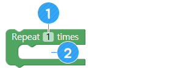
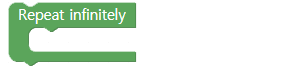
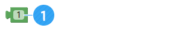

Melololoskan diri dari labirin/maze
• Memahami algoritma untuk lolos dari labirin.
• Kontrol pergerakan AsomeBot dalam berbagai situasi.
• Memahami karakteristik masing-masing bagian labirin dan mengembangkan metode meloloskan diri
A. Meloloskan diri dari labirin
Menggunakan sensor ultrasonik AsomeBot, Anda dapat membuat program yang mengenali dinding-dinding labirin dan melarikan diri dari hambatan.
B. Menentukan urutan belokan
AsomeBot bisa membuat program yang dapat sepenuhnya keluar dari labirin dengan sendirinya.Namun, metode ini sangat rumit untuk kita buat. Jika AsomeBot berjalan seperti yang ditunjukkan, AsomeBot dapat melarikan diri dari labirin melalui jarak terpendek. Mari kita cari tahu bagaimana AsomeBot harus bergerak di sepanjang jalan ini untuk menghindari labirin.

C. Bagian sederhana dibelokan oleh sensor ultrasonik
Di area yang ditunjukkan pada Gambar, jika AsomeBot menemui hambatan saat berjalan pada sejumlah langkah, ia dapat berjalan menuju pintu keluar selama diperintahkan dengan petunjuk arah untuk berbelok.
1. Bicara tentang arah mana AsomeBot harus berpaling di setiap posisi.
2. Bicara tentang kapan AsomeBot harus berbelok pada jarak berapa antara AsomeBot dan hambatan.
D. Semua bagian diputar oleh sensor ultrasonik
Ketika AsomeBot menemukan dinding, ia harus berputar dalam bentuk 'ㄷ'.Ini membutuhkan lebih banyak gerakan dan lebih sulit daripada hanya berputar dalam satu arah. Bicara tentang bagaimana AsomeBot dapat pindah ke posisi yang benar di bagian ④.
E. Bagian yang perlu bergerak dengan langkah-langkah
Bagian ini adalah tempat AsomeBot harus berputar dalam bentuk 'ㄷ'.Ini membutuhkan lebih banyak gerakan dan lebih sulit daripada hanya berputar dalam satu arah.
1. Ukur dan bicarakan berapa banyak langkah yang diambil untuk berpindah ke setiap bagian.
2. Jika AsomeBot tidak dapat memindahkan bagian dengan tepat hanya dengan sejumlah langkah, bicarakan bagaimana cara keluar dari labirin.

A. Tunda/Delay (grup [ADVANCE])
Tunggu tanpa bergerak selama detik yang ditentukan.
Masukkan jumlah detik untuk menunggu setelah klik.

Buat program yang berjalan 3 langkah ke depan setelah 5 detik saat program berjalan.
B. Siaga/Attention (grup [BASIC])
AsomeBot berdiri tegak.
Buat program yang memungkinkan AsomeBot menunggu 2 detik, teruskan 3 langkah dan berdiri siaga/attention .
C. Atur align (grup [BASIC])
Anda dapat menyesuaikan nilai sudut dari empat motor yang terhubung ke AsomeBot . Sudut diubah dengan menyesuaikan sudut menggunakan blok[Set align] dan menambahkan blok [Attention], dan kemudian jalankan robot. Pastikan untuk mengingat sudutnya karena perubahan sudut perlu diatur ulang jika koneksi terputus.

① Sesuaikan sudut motor No.1.Motor ini pada dasarnya diatur pada 90 derajat.
② Sesuaikan sudut motor No.2.Motor ini pada dasarnya diatur pada 90 derajat.
③ Sesuaikan sudut motor No.3.Motor ini pada dasarnya diatur pada 90 derajat.
④ Sesuaikan sudut motor No.4.Motor ini pada dasarnya diatur pada 90 derajat.
Sesuaikan sudut setiap motor untuk berjalan lurus ke depan. Untuk menghindari labirin, robot harus dapat berjalan dengan benar .
D. Mengukur jarak/measure distance (grup [SENSOR])
Dengan sensor ultrasonik, ukur jarak penghalang di depan. Nilai jarak yang diukur disimpan dalam nama variabel 'Cm'.
E. Ulangi/repeat (grup [ADVANCE])
Ulangi perintah di blok sebanyak yang Anda inginkan.
① Tentukan berapa kali untuk mengulangi.
② Tambahkan blok untuk mengulang.
F. Ulangi hingga tak terbatas/repeat infinitely (grup [ADVANCE])
Jalankan blok di dalam blok untuk dijalankan secara berurutan.

Buat program yang memungkinkan AsomeBot terus berjalan maju .
G. Jika/if (grup [ADVANCE])
Jalankan blok yg ada di dalam blok [If] ketika input detail kondisinya benar. Jika kondisinya salah, blok setelah blok [If] akan dieksekusi.

① Masukkan variabel yang akan digunakan dalam pernyataan bersyarat.Nilai default adalah ' i' dan berubah menjadi 'cm' saat menggunakan sensor ultrasonik.
② Pilih ketidaksetaraan default untuk membandingkan kondisi.
③ Masukkan nilai default untuk digunakan dalam kondisi ini. Anda perlu menambahkan blok untuk menentukan nilai bersyarat.
④ Tambahkan blok yang akan dieksekusi ketika kondisinya benar.
H. Nilai Data (grup [ADVANCE])
Digunakan untuk menentukan nilai data seperti variabel atau angka.
① Masukkan nilai default untuk digunakan dalam kondisi ini.
① Buat program untuk mundur 3 langkah jika nilai jarak yang diukur oleh sensor ultrasonik kurang dari 5cm .
② Buat program yang belok 3 kali ke kiri dan lepaskan pernyataan berulang jika AsomeBot terus berjalan maju dan menemui rintangan (rintangan dalam jarak 3 cm ).
A. Aturan Permainan
① Siswa yang membuat program yang dapat lolos dari labirin dalam waktu paling singkat memenangkan permainan.
② Buat program yang memungkinkan AsomeBot keluar dari labirin dengan menggunakan jalur, seperti jalur gambar atau dengan menggunakan metode kreatif lainnya.

B. Algoritma
① Bagian merah. Ketika AsomeBot menemukan hambatan saat berjalan, ia harus berbalik dan bergerak.
② Bagian hijau. Ketika AsomeBot menghadapi hambatan, ia harus bergerak dalam bentuk 'ㄷ'.
③ Bagian biru. Pindahkan robot dalam jumlah langkah yang benar sesuai dengan karakteristik masing-masing AsomeBot dan putar untuk keluar dari bagian tersebut.

C. Bermain game